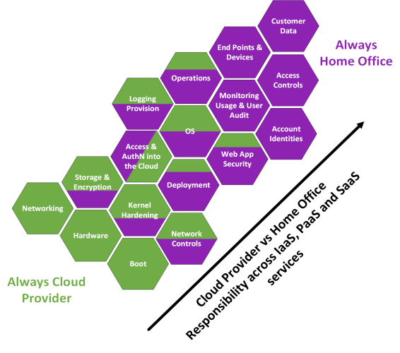
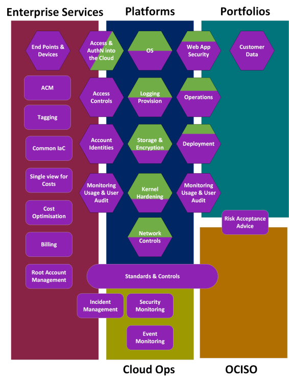
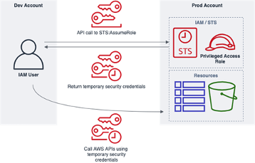

Security guidance
What is the security pillar?
The security pillar describes how to take advantage of cloud technologies to protect data, systems, and assets in a way that can improve your security. To give you an oversight of the pillar, we have included the seven design principles for security in the cloud below. For more information on the Security Pillar view the further resources.
Further security resources
Design principles
| Design Principle | Explanation |
|---|---|
| Implement a strong identity foundation | Identity, authentication and authorisation is highly important for access control and ensures that data remains protected |
| Enable traceability | The ability to audit and attribute actions within the cloud ensures that service and data security can be monitored |
| Apply security at all layers | Defence in depth approach increases difficulty of any attacks on the service |
| Automate security best practices | Automation allows repeatability and builds confidence in deployment – assessment of security benchmarks under Governance as Code approach |
| Protect data in transit and at rest | All data should be encrypted in transit across the cloud and all data should be encrypted at rest |
| Keep people away from data | Data should be protected from manual use and manipulation |
| Prepare for security events | Security breaches and incidents happen and preparation for these events can ensure that when then do occur they can be dealt with quickly and effectively and minimise any potential data loss or compromise of assets |
Considering the guidance from the security pillar of the Well Architected Framework, we have different sections that relate to security in the Home Office:
- Cloud responsibility model
- Long lived access keys
- How IAM works in the HO
- National Cyber Security Centre (NCSC) Cloud Security Principles
Cloud responsibility model
What is the cloud responsibility model?
Cloud Security is fundamentally based on what the major public cloud providers term as shared responsibility model (SRM) between customers and the cloud provider. All organisations using the cloud sign up to this model. The SRM defines who is responsible for what on the cloud. The model broadly divides responsibilities into "of" and "in". The Home Office has responsibility for the security in the cloud, this covers how we use the cloud. While the cloud provider has responsibility for the security of the cloud. The details of this model depend significantly on the type of service that you are using in the cloud, for example the Home Office has less responsibility over an Azure Function (the equivalent of AWS lambda) which is serverless compared to an AWS EC2 where everything accept the physical hardware, boot and storage is our responsibility.
Cloud Services
Cloud services can be generally split between Infrastructure, Platform or Software as a service.
- Infrastructure as a Service (IaaS) are services provided within the cloud means that the Home Office operates the infrastructure but do not control the physical infrastructure.
- Platform as a Service or Container Services (PaaS/CS) (Azure/AWS) are cloud provided services where the customer has fewer responsibilities to secure the service and AWS/Azure have greater responsibility for keeping services up to date. Cloud providers are responsible for the platform and application management as well as the security of the operating systems and networks (except for Firewall configuration, i.e. security groups which can be configured by the customer to lock down access to the service).
- Software as a Service or Abstract Services (SaaS/AS) (Azure/AWS) are cloud provided services where the customer has the fewest responsibilities to secure the service. The cloud provider is responsible for the security of network, platform, OS and infrastructure. The Home Office are responsible for managing who has access to the data and that we are using the encryption services. These responsibilities are split over several Home Office teams.
The functions within the model can be broken down to the following:
| Area of Responsibility | SaaS/AS | PaaS/CS | IaaS | Definition |
|---|---|---|---|---|
| Customer Data | HO | HO | HO | This is any data that the Home Office stores within AWS, i.e. an Immigration application, advanced passenger information. Under the Model this always remains the responsibility of the Home Office. The security of this data in the cloud is the responsibility of the portfolio using the cloud, however, other teams such as CSOC, platforms, public cloud, networks & infrastructure can assist by supporting security controls that allow more effective discharge of these responsibilities to mitigate the risks. |
| End-points & Devices | HO | HO | HO | These are equipment that the Home Office uses or are used by our customers to connect to Home Office services in the cloud. The security of these remain the responsibility of the Device Owner (i.e. EUC&C within DDAT ES, Supplier when using Supplier BYOCD or an individual in the case of our customers). It is the responsibility of the portfolio to ensure that their risk owners are content with any risks related to end points and devices. |
| Account Identities | HO | HO | HO | This is the identity used by HO users to access the public cloud. This is the responsibility of the public cloud team to manage on behalf of the Home Office. |
| Access Controls | HO | HO | HO | These include policies, roles and permissions. The HO organisational wide Access Controls are the responsibility of the public cloud team to implement, managing risk on behalf of the risk owners (and will be set with conversations with portfolios and OCISO). Portfolios (account owners) retain responsibility of access controls for any specific roles they create within their accounts. |
| Monitoring Usage and User Audit | HO | HO | HO | This includes system and protective monitoring of what services HO uses and an audit of which users have access to services. The responsibilities here sit across portfolios, CSOC and the public cloud team who can enable policies within the organisation to make this more straightforward. The business owner within the portfolio is responsible for how services are used. |
| Web Application Security | HO/CP | HO | HO | A broad term for the security posture of any web application deployed onto the public cloud. Responsibilities for web application security lie with the Home Office, with the exception of container services. |
| Deployment | HO/CP | HO | HO | The deployment of services used by HO in the cloud is generally the responsibility of individuals platforms and portfolios as this relates to their deployment of cloud services, and there are a range of deployment methodologies and tools in place within HO. The Public Cloud Team are responsible for the deployment of new accounts and new users. The Cloud provider is responsible for the deployment of most functionality in SaaS and particularly serverless use case. |
| Operations | CP | HO | HO | The operations of services used by the Home Office in the cloud, this is generally the responsibility of the platforms that use these services. |
| Access and Authentication into the Cloud | HO/CP | HO/CP | HO/CP | The identity service provided by the Cloud Provider, which is used to gain access and authenticate into the cloud and the cloud provider retains control over this identity service. The HO is responsible for use of this, through Account Identities and Access Controls above. |
| Network Controls | CP | HO/CP | HO | Network controls such as firewalls, load balancers, DMZ, segregation securing access, monitoring etc. are the responsibility of the Home Office when running IaaS (e.g. EC2) and are the responsibility of platforms, networks & infrastructure and portfolios to undertake (the split in responsibility depends on the model within the accounts). The PCT can assist by implementing technically enforced policies and guidelines that prevent the network controls being too open, these will be defined in conversation with portfolios, OCISO and CSOC. Within the SaaS model the cloud provider retains responsibility of these controls - however, from an assurance perspective the Home Office should be appraised of what these controls are. |
| Operating System | CP | HO/CP | HO | Within SaaS tools this remains the responsibility of the cloud provider, who will patch and keep these up to date. Within most PaaS this is also true, however, within IaaS it is the responsibility of the Home Office to manage the OS and keep these up-to-date. This is the responsibility of the portfolio/platform to undertake this. On AWS this can be done using AMIs and the public cloud team can support this with technically enforced policies, monitoring and guidelines that can alert or prevent deployment of vulnerable OS. |
| Logging Provision | CP | HO/CP | HO | Cloud providers have several tools in place to assist with logging and the provision of logs for SaaS and PaaS is primarily the responsibility of the cloud provider, with the Home Office taking responsibility to ensure that these have been turned on and configured. The PCT may provide guidance and technical enforcement of logging across the estate through policies, but these will be agreed between portfolios, platforms, OCISO and CSOC. Note even in IaaS the Home Office can hook AWS logs generated on the infrastructure, i.e. VPC flow logs, API calls into CloudTrail, but other logs remain the responsibility of the portfolio or platform running the IaaS to provision and ensure these are protected. |
| Storage & Encryption | CP | CP | HO | The physical data storage always remains the responsibility of the cloud provider. The encryption and configuration of databases on top is the responsibility of the Home Office portfolios and platforms that are using the cloud services. They can specify what encryption is in place and policies around data storage. There is an exception when using a SaaS service where the cloud provider manages the encryption and configuration of database also. |
| Networking | CP | CP | CP | The physical networking within and out of a data centre is the responsibility of the cloud provider. |
| Kernel Hardening | CP | CP | HO | Kernel hardening is a kernel configuration that mitigates any vulnerabilities or bugs within the kernel to prevent cyber security attacks. Where the Home Office deploys its own OS and devices it is the responsibility of HO to manage this and this would set with Portfolios and Platforms to do. Otherwise, this remains the responsibility of the cloud provider. |
| Boot | CP | CP | CP | This is part of the physical infrastructure of the data centre and is always the responsibility of the cloud provider. |
| Hardware | CP | CP | CP | The physical infrastructure within the data centre is always the responsibility of the cloud provider. The Home Office must ensure in line with the SPF that they are content with the physical security of any supplier they use, which can be demonstrated through physical security reviews/audits often conducted by third party consultancies under the SOC 2 reports. The provider is also responsible for the virtualisation. |
Cloud Providers and Home Office Responsibility Model
The responsibility model split between the Cloud Provider and the Home Office is shown in the diagram below. This has been genericised across the IaaS/PaaS/SaaS type services, where the more purple equals more responsibility that the Home Office takes over the service (i.e. for a Operations HO would have responsibilities for IaaS and PaaS components but the Cloud Provider would have the same for SaaS).
What does this mean in practice to the Home Office, and where do the responsibilities sit within the Home Office organisation structure?
The answer depends on where in Digital, Data and Technology the AWS account sits. Under the model, the Home Office has adopted this aligns to the division of the Home Office AWS estate into three Organizations (BICS-EBSA, Policing and Central). Note that the Public Cloud Team will remain responsible for billing across all accounts, although we will not retain root account responsibilities for Policing. This has an impact on cyber security risk management and where controls are put in place across the organisation.
Home Office Responsibility Matrix
| Area of Responsibility | ACP | EBSA | Policing | HMPO | Wider HO |
|---|---|---|---|---|---|
| Customer Data | Portfolio | Portfolio | Policing | Portfolio | |
| Billing | PCT | PCT | Policing | PCT | |
| End-points & Devices | EUC&C + Suppliers | EUC&C + Suppliers | Policing | EUC&C + Suppliers | |
| Account Identities | PCT | EBSA + PCT | Policing | PCT | |
| Access Controls | ACP + PCT | EBSA | Policing | Portfolio + PCT | |
| Monitoring Usage and User Audit | ACP + Portfolio | EBSA | Policing | Portfolio + PCT | |
| Web Application Security | ACP + Portfolio | EBSA + Portfolio | Policing | Portfolio + Platform | |
| Deployment | ACP | EBSA | Policing | Portfolio + Platform | |
| Operations | ACP | EBSA | Policing | Portfolio + Platform | |
| Access and Authentication into the Cloud | PCT | EBSA | Policing | PCT | |
| Network Controls | ACP | EBSA | Policing | Platform | |
| Operating System | ACP | EBSA | Policing | Platform | |
| Logging Provision | ACP | EBSA | Policing | Platform | |
| Storage & Encryption | ACP | EBSA | Policing | Platform | |
| Kernel Hardening | ACP | EBSA | Policing | Variable |
The responsibility matrix can also be expanded to other areas of processes and standards across the HO organisation and diagram below shows a generic responsibility model across Central teams (i.e. Enterprise Services teams), Platforms (i.e. EBSA, ACP, LECP), Portfolios (i.e. BICS, PPPT) and HO capabilities such as CSOC/ITOC and OCISO. It is noted that individual areas will have a slightly different split of responsibilities and this should be outlined within security and service wrappers.
What does the above mean for my project?
That depends on what service type you are using and where in the Home Office your project is. If you are using IaaS, i.e. you are running and managing your own EC2 instances to do something on your application, you will be responsible for significantly more security controls than if you are using a HO Platform such as EBSA or ACP. The key thing to remember is that although your project may not be directly responsible for the configuration and provision of cloud services you use from a data protection and cyber security perspective your Senior Responsible Owner will be taking risks that are mitigated by actions of other teams.
The Public Cloud Team is available to help with any questions and queries email: public.cloud@homeoffice.gov.uk
Further resources
Access Keys
This guidance has been designed to help development and operational teams using AWS to avoid using long-lived access keys and use temporary credentials instead (via the Secure Token Service).
Note: An alternative is to ensure the long-lived access keys are rotated regularly (i.e. within 90 days of creation).
What is an access key?
An AWS access key are long-term credentials for an IAM user. Access keys consist of an id and secret which is similar to usernames and passwords. Access keys can be used to sign programmatic requests to the AWS CLI or AWS API (directly or using the AWS SDK).
Access keys in the Home Office
The Home Office as of May 2020 has over 1400 active AWS access keys which had not been rotated within 90 days, of which over 350 (25%) have not been rotated in over two years. Static credentials pose a security and compliance risk as it means they can be used on an ongoing basis if they have been lost, stolen, cracked or published to a public repository. At present access keys are used by both users and applications / services.
Why is rotating access keys important?
The importance of AWS access keys and rotation of them can be seen through their inclusion in the AWS top 10 security items to improve in your AWS account and CIS AWS Foundation Benchmark.
The Public Cloud Team encourage the use of more secure and robust access key policy for the Home Office to educate users, application and platform teams of best practice and to encourage good behaviours. In the future the PCT may if authorised by Home Office technical, data, governance and security fora enforce the use of best practice, however, the current model is educate, detect, guide.
Policy
The PCT are looking at implementing the following policy for access keys, to reduce the risks to the Home Office. We will not force business areas to comply with the policy. The policy will allow us to highlight where there are potential risks in the organisation.
- AWS access keys should not be used where there is a valid alternative available using temporary access keys
- AWS access keys must only be created where there is a clear requirement for programmatic access
- AWS access keys must be rotated at least every 90 days, if not more often, either through the AWS Console, Command Line Interface (CLI), or Application Programming Interface (API). Instructions for rotating access keys
- Individual AWS access keys must not be shared internally or externally with any other user or organisation, that is not the intended recipient of the access key
- AWS access keys must be securely stored and approved as part of a service's security assurance
- AWS access keys must not be embedded directly into code or repositories, tools provided by the AWS SDK and command line tools (e.g. AWS credentials file) should be used instead. Further documentation for using temporary
- In the event an AWS access key is published to the internet (e.g. GitHub), shared or lost you should follow the relevant incident management process and notify public.cloud@homeoffice.gov.uk immediately. The access key should also be made inactive and deleted.
- Permissions for individual users, services or applications using AWS access keys should be limited, based on least privilege and regularly reviewed (administrative permissions should be given as a last resort)
- Multi Factor Authentication (MFA) must be enabled for any individual IAM user that has programmatic access and AWS access keys provided to them
Rotating your Access Keys
Access keys have a high level of permission, do not require re-authentication or use of MFA and can be easily committed as code. Therefore, it is much better practice to rotate any access keys that you use on a regular basis (AWS recommend a maximum of 90 days). It is noted that AWS recommend using temporary security credentials through the STS service over using access keys at all.
In order to rotate your access keys, you need to have permission. All Home Office users with HOFullAdmin role should have the correct permissions. If you do not, you can raise a request with the Public Cloud Team to update your permissions. AWS have produced step by step guidance for rotate access keys using the Console, the CLI and the API to rotate any user access keys.
Amazon blog post for rotating access keys
Temporary Access Keys
At present the use of AWS access keys provide high levels of access with long lived credentials. However, in most cases long lived credentials are not required, and the access requirements can be fulfilled using short-lived temporary security credentials.
Temporary security credentials are generated using the Security Token Service through the assumption of IAM roles. Along with an access key ID and secret access key, a security token is also created that indicates when the credentials expire. An example of the flow is provided below.
The primary benefit of temporary access keys provided by STS is that it limits the potential blast radius of any security incident, as the credentials provided are short lived. This means if they are accidently shared, published or stolen they will soon time out without user intervention. Where it is required though temporary security credentials can be revoked as detailed. How to revoke IAM role temporary security credentials
Amazon EC2
Where an application or AWS CLI script is running on an EC2 instance do not use access keys directly in the application. Instead define an IAM role that has the appropriate permissions for your application and attach it to the EC2 instance to be used. For applications using the AWS SDKs and CLI temporary credentials are retrieved from the role automatically. IAM roles for EC2.
AWS Lambda
Each Lambda function has an execution role created in IAM that provides the function with the necessary permissions to run. When using the AWS SDKs, the temporary credentials are automatically retrieved from the execution role. Long lived AWS access keys should not be used at all when using Lambda including providing them via the environmental variables. AWS Lambda execution role.
IAM USERS
The majority of IAM users do not require access keys that provide them with high levels of permissions, or multiple access keys to access multiple AWS accounts. Instead following best practice IAM users should be provided with a single AWS access key that provides a minimal level of access, this reduces the blast radius of long-lived access keys being published to the internet, shared or stolen as they will have restricted access. When users require privileged access, they should assume a role which will grant them temporary credentials as per figure 1. This can be used both within the same account that the IAM user exists in and to provide cross account access.
Future
The PCT are currently under educate, detect, guide model, where we are aiming to improve cloud practices across the Home Office by improving understanding of the cloud, being able to highlight when best practices are not being followed, and guiding our users.
Back to start of navigation tree
Back to top